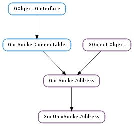

| static | abstract_names_supported() |
| static | new(path) |
| static | new_abstract(path) |
| static | new_with_type(path, type) |
| get_address_type() | |
| get_is_abstract() | |
| get_path() | |
| get_path_len() |
| Name | Type | Flags | Description |
|---|---|---|---|
| abstract | bool | r/w/c | Whether or not this is an abstract address |
| address-type | Gio.UnixSocketAddressType | r/w/c | The type of UNIX socket address |
| path | str | r/w/c | UNIX socket path |
| path-as-array | GLib.ByteArray | r/w/c | UNIX socket path, as byte array |
None
| Name | Type | Access |
|---|---|---|
| parent_instance | Gio.SocketAddress | r |
Bases: Gio.SocketAddress
Support for UNIX-domain (also known as local) sockets.
UNIX domain sockets are generally visible in the filesystem. However, some systems support abstract socket names which are not visible in the filesystem and not affected by the filesystem permissions, visibility, etc. Currently this is only supported under Linux. If you attempt to use abstract sockets on other systems, function calls may return Gio.IOErrorEnum.NOT_SUPPORTED errors. You can use Gio.UnixSocketAddress.abstract_names_supported () to see if abstract names are supported.
Note that <gio/gunixsocketaddress.h> belongs to the UNIX-specific GIO interfaces, thus you have to use the gio-unix-2.0.pc pkg-config file when using it.
| Returns: | True if supported, False otherwise |
|---|---|
| Return type: | bool |
Checks if abstract UNIX domain socket names are supported.
| Parameters: | path (str) – the socket path |
|---|---|
| Returns: | a new Gio.UnixSocketAddress |
| Return type: | Gio.SocketAddress |
Creates a new Gio.UnixSocketAddress for path.
To create abstract socket addresses, on systems that support that, use Gio.UnixSocketAddress.new_abstract ().
| Parameters: | path ([int]) – the abstract name |
|---|---|
| Returns: | a new Gio.UnixSocketAddress |
| Return type: | Gio.SocketAddress |
Creates a new Gio.UnixSocketAddressType.ABSTRACT_PADDED Gio.UnixSocketAddress for path.
| Parameters: |
|
|---|---|
| Returns: | a new Gio.UnixSocketAddress |
| Return type: |
Creates a new Gio.UnixSocketAddress of type type with name path.
If type is Gio.UnixSocketAddressType.PATH, this is equivalent to calling Gio.UnixSocketAddress.new ().
If path_type is Gio.UnixSocketAddressType.ABSTRACT, then path_len bytes of path will be copied to the socket’s path, and only those bytes will be considered part of the name. (If path_len is -1, then path is assumed to be NUL-terminated.) For example, if path was “test”, then calling Gio.SocketAddress.get_native_size () on the returned socket would return 7 (2 bytes of overhead, 1 byte for the abstract-socket indicator byte, and 4 bytes for the name “test”).
If path_type is Gio.UnixSocketAddressType.ABSTRACT_PADDED, then path_len bytes of path will be copied to the socket’s path, the rest of the path will be padded with 0 bytes, and the entire zero-padded buffer will be considered the name. (As above, if path_len is -1, then path is assumed to be NUL-terminated.) In this case, Gio.SocketAddress.get_native_size () will always return the full size of a struct sockaddr_un, although Gio.UnixSocketAddress.get_path_len () will still return just the length of path.
Gio.UnixSocketAddressType.ABSTRACT is preferred over Gio.UnixSocketAddressType.ABSTRACT_PADDED for new programs. Of course, when connecting to a server created by another process, you must use the appropriate type corresponding to how that process created its listening socket.
| Returns: | a Gio.UnixSocketAddressType |
|---|---|
| Return type: | Gio.UnixSocketAddressType |
Gets address ‘s type.
| Returns: | True if the address is abstract, False otherwise |
|---|---|
| Return type: | bool |
Tests if address is abstract.
| Returns: | the path for address |
|---|---|
| Return type: | str |
Gets address ‘s path, or for abstract sockets the “name”.
Guaranteed to be zero-terminated, but an abstract socket may contain embedded zeros, and thus you should use Gio.UnixSocketAddress.get_path_len () to get the true length of this string.
| Returns: | the length of the path |
|---|---|
| Return type: | int |
Gets the length of address ‘s path.
For details, see Gio.UnixSocketAddress.get_path ().